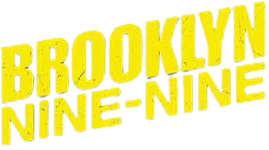

A série gira em torno de Jake Peralta, um imaturo, mas talentoso, detetive da polícia de Nova York na fictícia 99.ª Delegacia do Brooklyn, que muitas vezes entra em conflito com seu novo comandante, o sério e severo capitão Raymond Jacob Holt. O restante do elenco inclui Stephanie Beatriz como Rosa Diaz, Terry Crews como Terry Jeffords, Melissa Fumero como Amy Santiago, Joe Lo Truglio como Charles Boyle, Chelsea Peretti como Gina Linetti, Dirk Blocker como Michael Hitchcock e Joel McKinnon Miller como Norm Scully.